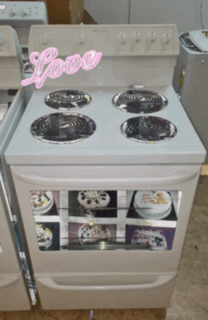
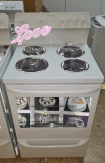

About
My name is Deborah.
I am 16.
I am from Toronto.
“The internet has compressed many things already previously compressed, creating objects both extremely heavy in connotations and extremely light at first appearance.
Just as spoken language is a compression of lived experience, so too is the written word a compression of lived experience, so too is net-speak an even further compression of all of these things. (Troemel 20)”
In my work, I investigate the images and symbols that act as placeholders for real objects.
By compiling images, sounds, and landscapes from the internet, I compress my lived experiences into films, and gifs.
The process of image-experience compression allows me to strip an experience down to its primitive forms.
Namely - the specific colours, sounds and symbols that are necessary to evoke the feeling of a place or object.
The process of viewing the piece then mimics the decoding of language or the unzipping of a file – viewing re-expands the content of the piece.
My work draws from industrial signage, food packaging, kitsch and stock-images.
In my spare time I enjoy circuit bending and playing Sokoban.


 
